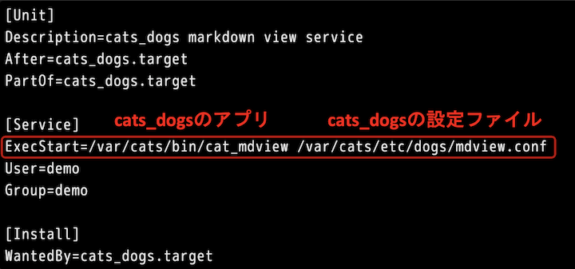
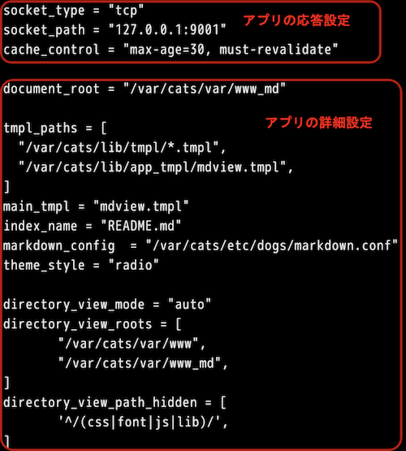

おはようございます。こんにちは。こんばんは。ふぇにっくちゅん です。
今回は cats_dogs の数あるモジュールの中、Markdown を描画する cat_mdview について解説します。
まず先に、本記事で参照するリンクを示しておきます。
これらの設定ファイルをサーバに配置しました。
設定ファイルだけでは動かないため、cats_dogs のアプリは以下のディレクトリに配置しました。
/var/cats/bin/本記事で扱うのは /var/cats/bin/ の中に置いている、cat_mdview というファイルです。
このファイルが、Markdown を描画するアプリです。
では、本記事で扱う登場人物（ファイル）を紹介したところで、以降に解説していきます。
Markdown アプリを稼働させるファイルは、cats_dogs-mdview.service という設定ファイルです。
以下に、デモで利用したファイルを示します。

このファイルは、アプリをどのように稼働させるかが記述されています。
ここで、注目すべきは赤枠で囲った一行です。
ExecStart の右には、稼働させるアプリの配置場所、稼働させるアプリが参照する設定ファイルを記述しています。
参照する設定ファイルは、アプリがどのように動作するかが記述されたファイルです。
このファイルで、アプリが稼働するようになります。
アプリが稼働するといっても、どのように動作するかはわかりません。
それを決めるのが、markdown.conf と mdview.conf です。
markdown.conf は、Markdown の構文を設定することができます。
mdview.conf は、アプリが参照するコンテンツなどの配置先など、細かな設定を記述します。
markdown.conf は、文章を書く際に利用する Markdown の構文を選択することができます。
具体例を見たほうが早いので、以下に2種類の設定ファイルを示します。
この設定の違いは、Markdown の構文のうち、表（テーブル）を記述するための構文をオンもしくはオフに設定しています。
つまり、false を設定すると、Markdown 上に記述した表が、ブラウザで整形されないということです。
以下に、上記設定ファイルで稼働させた際の、Markdown の表示を示します。
左には、表として描画されています。
右は、表の構文をオフにしているため、Markdown 上に記述した文字がそのまま描画されています。
その他の設定については「cats_dogsのMarkdown処理」を参照ください。
mdview.conf は、アプリが表示するコンテンツ（ Markdown ファイル）の配置場所など、細かな動作を指定するファイルです。
以下に、デモで利用した設定ファイルを示します。

この設定ファイルは大きく、2つのパートに分かれています。
上記の3行は、ブラウザから要求された描画命令に対して、アプリが応答するための設定です。
プロトコルやポート、キャッシュの設定ができます。
次に、以降の設定です。
ここでは、主要な設定だけを取り上げます。
まずは、document_root です。
document_root は、Markdown ファイルが配置されている、サーバ上のディレクトリパスを記載します。
デモでは、/var/cats/var/ にコンテンツを配置しました。
つまり、アプリが描画する Markdown ファイルは /var/cats/var/www_md/ に配置しているため、上記設定ファイルにはこのパスが記述されています。
つぎに、markdown_config ですが、これは先程説明した markdown.conf の配置場所を記述します。
index_name は、Web サーバのトップへアクセスした際に、デフォルトで表示するファイルを指定します。
たとえば、アプリを example.com で稼働させていたとします。
その際に、http[s]://example.com に対して、ファイル名を指定せずにアクセスしたときに表示されるファイルです。
最後に、directory_view について説明します。
directory_view は、ブラウザで表示される「ディレクトリ情報」の動作を決めます。
細かくは4つ（directory_view_mode、directory_view_roots、directory_view_hidden、directory_view_path_hidden）の設定が可能です。
「ディレクトリ情報」に表示・非表示するディレクトリの設定ができます。
細かい設定の方法は「ディレクトリ・ビューの詳細」を参照ください。
その他、mdview.conf の設定は「cat_mdviewプログラム」を参照ください。
cats_dogs は、Markdown で記述されたファイルを解析して、HTML の形式に変換しています。
そのため、Markdown ファイルが整った状態で、ブラウザから閲覧できます。
ここでは、その秘密を紐解きます。
mdview.conf の設定で、いくつか説明していないものがあります。
それが、main_tmpl と tmpl_paths です。
これは、アプリが HTML の形式で出力する際に利用する雛形です。
その雛形ファイルは、mdview.tmpl というファイルです。
このファイルを元に、アプリは解析した Markdown ファイルを HTML に変換して出力しています。
つまり、mdview.conf で設定する main_tmpl と tmpl_paths は、アプリが利用する雛形の配置場所を記述しています。
デモで配置した、/var/cats/lib/ の中には雛形となる HTML などの部品が入っています。
今回は、cats_dogs アプリの根幹である cat_mdview のモジュールについて解説しました。
次は、cats_mdview の拡張版である cat_tmplview を解説します。